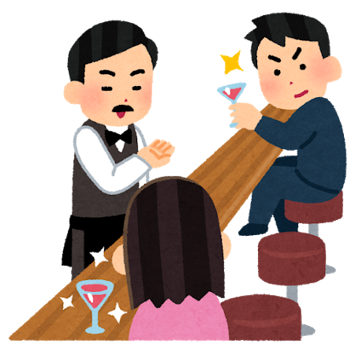

私、そして酒を飲むことについて
私、そして酒を飲むことについて
人生で初めてビールを飲んだ時の「なにこれ？」の衝撃が過ぎたあたり、酒を飲み始めてかなり最初のほうから、酒は酩酊することより味が好きで、その後もずっと飲んでいました。
いい大人になってもおいしく飲んできましたが、40になる前後に少し酒を飲むことへの疑問が沸いてきて、そして今現在、禁酒こそしてないものの、酒というものに対しての見方、付き合い方が若い頃とガラッと変わってきました。
結論はないのですが、自分の感じたことの備忘録です。
しつこいですが落ちはありません。

まず最初に断っておくと、僕は今でもオーセンティックバーの類いは大好きなので、色々と条件が合えば楽しみにしてお店に出向きますし、家でも寝酒を時々飲んだりしています。酒を飲むこと自体の否定は全くしません。お好きで飲めるならどうぞどうぞです。
今回これを書いているのは、「酒は基本的にあったほうがいいなぁ」と思っていた自分と「いや、そもそも酒があることを前提に色々考えるのはどうなんだ」と思っている自分の差を書き留めておきたかったからです。
そもそも若い頃は本当、飲めない人が不憫でした。不憫というと「え」と思われるかもしれませんが、最初に書いたとおり僕は酩酊して騒ぐのが好きというわけではなくて、酒の肴やいくつかの料理は本当に酒の味と合う、と思っていたので、それが経験できないのはもったいないなぁ、と思っていたからです。それに加え、酒は未知との遭遇のような状況に似た、新しい酒との出会い、というものが恒常的にありその経験がとても楽しかったから心のどこかでそのように思っていました。
また、一人の時間と可処分収入もそれなりにあったので、一月の稼ぎの大半を酒に費やす、なんてこともできてしまっていました。おかげさまであちこちに出向いて色々な酒をのむことはできましたが、もちろんおすすめはできません。
そういう浪費をやめたあとも、まぁ一日一杯はのむかなー、遊びに行った時は4〜8杯くらいのむかなーという生活でした。
これでベロンベロンというわけでもなく、わりとふつうにシャキッとして帰宅して、翌日も朝から元気に活動していました。余談ですが、自分は煙草も特段嫌いではないですが、基本的には吸いません。若かりし頃は葉巻を2ヶ月に一度くらい吸うのが好きでしたが、最近はこの後書く理由と同じで2ヶ月に一度が半年か1年に一本くらいのペースになってきました。
さて、20代と30代前半はそのように過ごしましたが、30代後半から現在にかけて、何かがかわっていきました。
まず家族を持ったことによって飲み歩く時間が減りました。寝酒を飲む事もある、と前述しましたが、なるたけ子供の前では飲酒しないようにしているので、飲むとしても夜中に自分の時間ができた場合のみです。なので飲む回数は本当にやってられなくて辛い時期でも週三回（＝3本）、通常は1週間に1回（＝1本）かそれ以下という程度になりました。
そうやって飲酒の習慣が崩れたところから一気に体が受け付けることのできる酒の量が減りました。一日ビール一本でも、連日だと体へのダメージを感じられるようになりました。
また二日酔いになってしまったときの影響がひどくなり、酒量もそうですが、飲み合わせや体調などを考えてからそもそも飲むべきかどうか、飲むならどういう飲み方をするべきか考えないと普段の生活に以前より影響が出るようになってしまいました。
はっきり言ってしまえば老化なわけですが、ともかく「以前と同じではない」自分を感じたわけです。
さて、こうなってようやく僕は外出時とかに「酒を飲まない側」の人間になることが多くなりました。別に車を運転しているわけでなくとも、体調がぼちぼち良くても、「ここでわざわざ飲む必要があるかというとそうでもないな」と判断した時にはウーロン茶や水だけで過ごすことが多くなりました。
そうなって初めて気づく事柄がいくつかありました。
例えば、出かけた先のお店で長っ尻ができない。いや、できないわけではないのですが、そのための心の準備をしないとダラダラとやってられない。あと、目先を変えれば連チャンも無しではないですが、勢いで2件目の飲み屋へ、なんてことはありえなくなりました。
あとは、酒を飲んだ後でキャラクターがちょっと変わっちゃうタイプの人が気になるようになってしまいました。先ほど酩酊するのが好きなわけではない、とは書きましたが、酒を飲んでいる時は当然自分も酔っているわけですから、普段の自分とはどこか違うわけです。そのノリの中であれば、酒の席ではっちゃけるタイプの人とも違和感なく同席できたのが、完全にしらふだと「ちょっと引くわー」と思ったり。
と、まぁ細かい事はいくらでもあるのですが、ともかくやはり「酒を飲まない人が酒の席にいる」という状態はいままであまり感じたことがなかったので、なるほどなぁ、ということが自分の中でいくつかあったわけです。
上記のような、酒を飲まない人の立場を賢しく酒飲みの皆様に伝えたい、というわけでないです。
酒を楽しんでいる方達にとってみれば僕のほうが無粋な訳で、それはそれで僕がそういう場に出なければいいだけですから、「だからみんな酒を飲むな！」というわけではありません。
繰り返しますが、僕はまだ健康診断でも禁酒令が出ているわけではないので、時折飲んでますので、まだまだ僕も全く飲まない人たちから見れば酒飲みの一人なわけです。
ただ、自らの意思で「今日の席では酒を飲まない」という行動をして、当事者としてそういう場にいることで世界の見え方が少し変わったので、自分を含む酒飲みの皆様も別にお酒はこれまでどおり楽しんでもいいけど、そうじゃない人たちもいることだけは分かって行動したほうがいいね、と思い始めています。
なんというか、広義のダイバーシティってこういうことだよなというか、別に各々が何かを犠牲にすることはないんですが、立場が変われば物事の見方が変わるわけだからゾーニングをするなり、同席する場合は配慮をするなりするべきだよね、ということです。
まだどうやっていくのかは具体的にはわからないですが、自分は時折イベントとかを企画・開催している側の人間ですから、これからは飲食イベントを設計する時に酒を飲むことを前提としない(※)、（同じ事ですが）飲まないと成立しない企画をしない、飲酒をしている人が問題を起こした時に酒をのでいるからとなぁなぁにしないなど、そういうことを考えながらやっていこうと思います。
（※) 小さな例で恐縮ですが、例えば個人の肉会イベントなどではお酒を飲む人だけに追加の「お気持ち」を払ってもらうなどしてお酒を飲まない人に配慮するなどの事は以前からしています
そんなわけで最初に書いた通り落ちはありませんが、お酒大好き人間がお酒を飲まなくなって、なんか気づくこともたくさんあったなぁ、というお話でした。